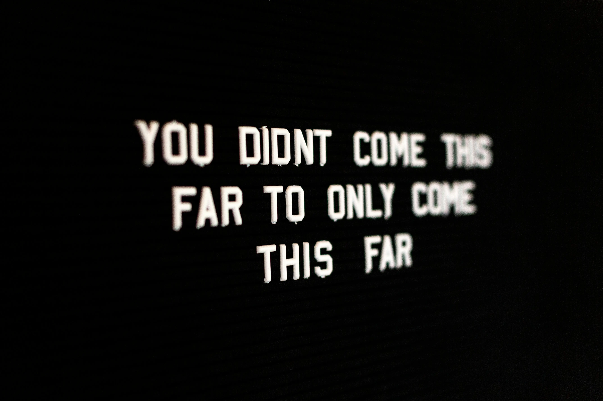

Welcome — You're in the Right Place
Starting a wellness journey can feel overwhelming, especially with so much conflicting information out there. The truth is, getting healthy doesn't require a perfect plan, expensive equipment, or an extreme diet. It just requires starting — and taking one small step at a time. This guide will walk you through exactly how to begin.

Step 1 — Define Your Why
Before anything else, ask yourself: why do you want to get healthier? Your "why" is your anchor when motivation dips. It might be to have more energy, feel more confident, manage stress, or be able to keep up with your kids. Write it down and put it somewhere you'll see it every day.
Step 2 — Start With One Small Change
Don't try to overhaul everything at once. Pick one habit to focus on for the first two weeks — whether that's drinking more water, going for a 20-minute walk three times a week, or cooking one healthy meal at home. Small wins build momentum.
Step 3 — Choose Your Starting Point
Based on your interests and goals, choose one area of Whole You Wellness to explore first:
- Gym & Strength Training — if you want to build muscle and get stronger.
- Home Workouts — if you prefer to exercise at home with no equipment.
- Yoga & Mobility — if flexibility, stress relief, and mindful movement appeal to you.
- Nutrition & Meal Prep — if you want to start with improving what you eat.
- Mindfulness & Mental Wellbeing — if stress management and mental health are your priority.
Step 4 — Build a Routine
Consistency beats intensity every time. A 20-minute workout done three times a week for a year is infinitely better than an intense month followed by burnout. Schedule your workouts or wellness practices like appointments and protect that time.
Step 5 — Track Your Progress
Keep a simple wellness journal — nothing fancy. Just jot down what you did, how you felt, and any wins (even small ones). Progress is often invisible in the moment but undeniable when you look back over weeks and months.
Step 6 — Be Kind to Yourself
You will have off days. You will miss workouts, eat the cake, and skip the meditation. That is completely normal and human. What matters is that you come back — without guilt, without shame, and without starting over from zero. Progress, not perfection, is the goal.